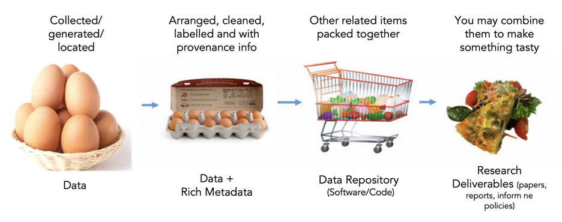
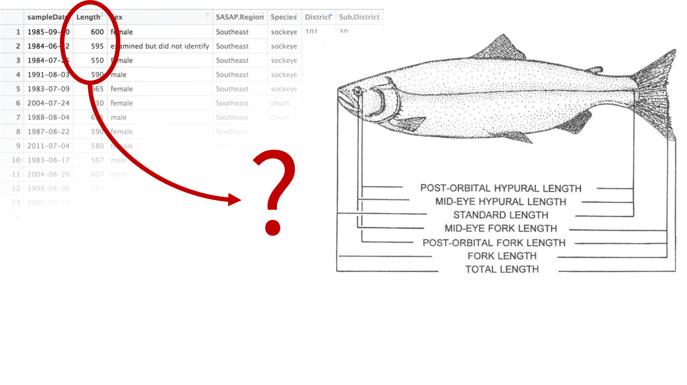
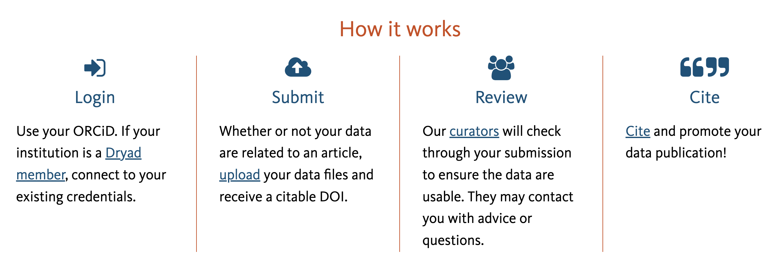

Preserve your data
As you finalize your projects, often an important task is to archive your data in a publicly available repository (pending sensitivity and by non-disclosure agreement exceptions). There are a few important steps to ensure that your data can be reused by others and thus make your work more reproducible.
What data products to preserve?
Your general philosophy when preparing the preservation of your scientific products should be: Document what you used (provenance) and preserve what you produced.
Often the first question that comes to mind when starting to preserve your work is: What should I include in my data archive? Generally speaking, you want to preserve your work. This means capturing the methodology you used, the raw data you collected, any data cleaning you did, and any data and output (figure, report, etc.) you generated. Okay… so you mean everything!? Well, yes and no. Everything relevant to help you come to the findings and conclusions discussed in your project report or any other publications and deliverables. Let’s break this down!
Raw data
Here are a few questions to ask yourself to determine if you should refer in your documentation to the raw data you used or also include them in your data archive.
- The raw data is already publicly accessible, and the hosting solution (website, FTP server, etc.) seems well maintained (ideally providing a recommended citation)
=> Document the website or process you used to collect the data and when you accessed/downloaded the data you used. Try also to determine if a specific version number is associated with the data you used.*
- The raw data is not publicly accessible
Note that we are not talking about data under a non-disclosure agreement (NDA) here but more about data with an unclear reuse status or obtained by interactions with a person or an institution. For example, if the data you used were sent to you privately, then we recommend that you:
- inquire with your person of contact about the status of licensing and if they would be willing to let you share those data publicly. You might face resistance at first, so take the time to explain why you think it is valuable to your work to also share those data sets.
- if, in the end, it is not possible to share the data, please still describe the data in your documentation and list the contact information (person or institution) to inquire about this data set.
Intermediate data
This is data you generated either while cleaning or analyzing the raw data. You should preserve it if:
- it was not directly generated by a script (otherwise, preserve the code instead)
- it has reusable value. For example, cleaned-up versions of raw data can be very valuable for others to reuse!
Code
Scripting your analytical workflow from the raw data to the end products is a great way to make your work more reproducible and more reusable by others. We thus strongly encourage your team to develop code to process and analyze data. Cloud-based code repository services, such as GitHub, GitLab, BitBucket, and more, are a great way to both manage and preserve your code.
Those services are often well-integrated with data repositories that link your code repository with your data archive. They also offer a way to tag a specific version of your code to ensure it is the exact code you used for a specific analysis.
Final products
We recommend including any data set used to produce statistics, figures maps, and other visualizations that were used in your work, in this case, even if generated by scripts.
Metadata
Metadata (data about data) is an important part of the data life cycle because it enables data reuse long after the original collection. The goal is to have enough information for the researcher to understand the data, interpret the data, and then re-use the data in another study.
Here are good questions to answer with your metadata:
- What was measured?
- Who measured it?
- When was it measured?
- Where was it measured?
- How was it measured?
- How is the data structured?
- Why was the data collected?
- Who should get credit for this data (researcher AND funding agency)?
- How can this data be reused (licensing)?
Metadata standards
How do you organize all this information? You could use a free-form format, like a README file or spreadsheet. But there is also a great advantage to using a more standardized way that will make the content not only Human readable but also machine-readable. This will enhance the data discovery as specific information will be potentially tagged or attributed to specific aspects of your data (e.g. spatial or temporal coverage, taxonomy, …).
There are a number of environmental metadata standards (think, templates) that you could use, including the Ecological Metadata Language (EML), Geospatial Metadata Standards like ISO 19115 and ISO 19139, the Biological Data Profile (BDP), Dublin Core, Darwin Core, PREMIS, the Metadata Encoding and Transmission Standard (METS), and the list goes on and on.
Some repositories will have standards baked into their systems, so if you plan to archive and preserve your data in a disciplinary repository with specific metadata requirements it is always important to check what are these in advance. You may need to rework your existing documentation accordingly.
Data provenance & semantics
Data provenance refers to one’s ability to trace the original source of a data set to the raw data that were used as input for the processing/analysis that led to the creation of this data set. It can be done more or less formally and this is an active area of research. Today, we will be focusing on capturing the information about the data you are collecting. Here are a set of good questions to help you in that process:
- Source / owner (Person, institution, website, ….)
- When was it acquired ?
- By whom on the WG ?
- Where is it currently located (Google drive, server, ….) ?
- Short description of the data
- Track if it is used in your analysis
Here is a template of a data log that could hep to store this information
Another important and related aspect and also active field of research is data semantics. Often data sets store complex information and concepts that can be described more or less accurately. Let’s take an example, you have received a csv file storing a table with several variables about a fish stock assessment. One of the variables is named “length”. However, there are many ways to measure the length of a fish. Which one is it?

Data semantics aims at clearly identify those concepts relying on vocabularies and ontologies, such as ENVO in environmental sciences. In addition, it enables the leverage relations between those concepts to help with (data) discovery.
Choosing a data repository
We know what we want to archive, now we need to decide where we want to preserve things!
UCSB’s institutional data repository Dryad will be your default data repository. However, we encourage you to discuss with your colleagues to determine if other data repositories might suit your targeted audience/community better. If you used some data from a specific data repository, that would be a good sign that it is a potential home for your work as well.
If you would like to research on your own which data repository could be best for your project, the Registry of Research Data Repositories is a great resource to do so. You can also search for similar data using data repository aggregators, such as DataONE to find where those data are hosted.
Dryad
Dryad is free of use for any UC affiliated researcher. Here is an overview of the process of submitting data to DRYAD:
